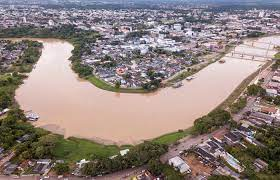

O Acre, estado localizado na região Norte do Brasil, é conhecido por sua rica cultura amazônica, florestas tropicais e sítios arqueológicos. Apesar de ser um estado relativamente pequeno, possui pontos turísticos interessantes. Aqui estão alguns dos principais pontos turísticos do Acre:
Bem-vindo ao Acre


Rio Branco: A capital do estado oferece atrações culturais, como o Museu da Borracha, que conta a história da exploração da seringueira na região, e a Catedral Nossa Senhora de Nazaré, uma bela igreja no centro da cidade. O Mercado Velho é um ótimo lugar para comprar artesanato local e experimentar a gastronomia regional.

Parque Nacional da Serra do Divisor: Localizado na fronteira com o Peru, o Parque Nacional da Serra do Divisor é uma área de preservação ambiental com rica biodiversidade. Possui trilhas, cachoeiras e uma grande variedade de flora e fauna, incluindo espécies ameaçadas de extinção.

Parque Zoobotânico: Situado em Rio Branco, o Parque Zoobotânico é um local onde os visitantes podem observar diferentes espécies de animais e plantas amazônicas. Possui trilhas, viveiros e um serpentário.

Sítio Arqueológico do Cachoeira do Iracema: Localizado no município de Sena Madureira, o sítio arqueológico abriga pinturas rupestres que datam de mais de 11.000 anos. É uma importante evidência da presença humana pré-histórica na região.